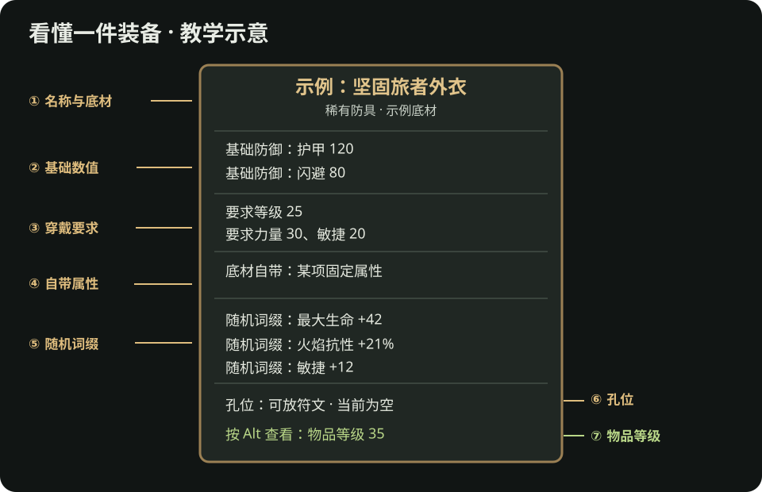

流放之路 2：看懂一件装备
看见满屏数字不知道该不该穿？先学会读一件物品，再决定捡、买还是做。下面的图是教学示意，不是某件真实可掉落装备；词缀、数值、孔位和界面布局以游戏内当前版本为准。

先读七个位置
| 位置 | 你在找什么 | 为什么重要 |
|---|---|---|
| 名称、稀有度、底材 | 这是哪一类武器或防具；普通、魔法还是稀有 | 主技能可能要求指定武器类型；制作材料也有稀有度限制。 |
| 基础伤害或防御 | 这件底材本身提供什么 | 同类装备可先比较基础类型，再看词缀。 |
| 装备要求 | 需要多少等级和力量／敏捷／智慧 | 要求不满足就穿不上；换掉旧装备提供的属性，也可能让技能变灰。 |
| 自带属性 | 底材本身带的属性 | 它与随机词缀不同，普通通货未必能把它“洗”成想要的属性。 |
| 随机词缀 | 生命、抗性、伤害、技能等级等 | 判断是否解决你当前的伤害或生存短板。 |
| 孔位与镶嵌物 | 可放的符文等材料，以及已放入的效果 | 别把孔位效果误认成普通随机词缀；使用前看能否更换。 |
| 物品等级 | 鼠标悬停时按 Alt 查看，或按平台的详细信息提示 | 它影响可出现的词缀范围，不是角色穿上它所需的等级。 |
一个常见误读：“要求等级 25”只说角色什么时候能穿；“物品等级 35”用于判断这件物品可出现的词缀范围。这两个数字不等于装备好坏。战役中一件要求低、词缀合适的装备，可能比高物品等级空白底材更实用。
用一件防具练习比较
假设旧防具给你火抗和必要的敏捷，新防具给更多生命，但没有敏捷。不要只看“生命 +多少”：先把新防具穿上，打开角色面板，看火抗与生命的实际变化，再确认主技能没有因敏捷不足而失效。若新装备让一个关键条件失效，它目前就不是直接升级。
前期判断顺序：能穿 → 技能能用 → 补最明显短板 → 看整体防御或伤害 → 再考虑制作和售价。武器也一样：攻击技能、法术和召唤技能使用武器属性的方式不同，不能只凭武器提示框最上方的数字判断。新手做装备有武器实例。
什么值得留下，什么先不用研究
- 先留意：适合主技能的武器类型、当前缺的抗性或生存属性、你已经在使用的制作材料和任务物品。
- 先不用深究：不认识的昂贵特殊词缀、每一个词缀等级、所有后期底材。你可以把少量疑似有价值的装备放在待查价页，集中比较。
- 准备交易或制作时再查：具体词缀能否出现在该部位、物品等级是否足够，以及同联盟成品报价。交易站和流放2编年史适合回答这两个问题。
读懂后去哪里
资料
- PoE2 Wiki：物品等级、物品：物品等级、装备要求与物品类型。
- PoE2 Wiki：词缀、制作：自带属性、随机词缀和孔位的概念；版本敏感细节以游戏内说明为准。